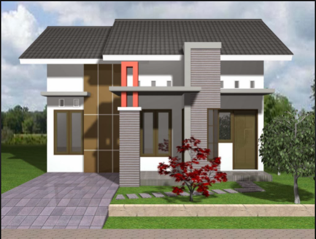

<html>
    <head>
        <title>Map Based Programming (Praktikum 4)</title>
        <link 
            rel="stylesheet" href="https://unpkg.com/leaflet@1.7.1/dist/leaflet.css"
            integrity="sha512-xodZBNTC5n17Xt2atTPuE1HxjVMSvLVW9ocqUKLsCC5CXdbqCmblAshOMAS6/keqq/sMZMZ19scR4PsZChSR7A=="
            crossorigin=""/>
        <script 
            src="https://unpkg.com/leaflet@1.7.1/dist/leaflet.js"
            integrity="sha512-XQoYMqMTK8LvdxXYG3nZ448hOEQiglfqkJs1NOQV44cWnUrBc8PkAOcXy20w0vlaXaVUearIOBhiXZ5V3ynxwA=="
            crossorigin="">
        </script>

        <style>
            #mapid {
                height: 700px;
            }

            .leaflet-popup-content-wrapper {
                background-color: black;
                color: white;
                text-align: center;
                font-family: comic sans ms;
                font-size: 15px;
            }

            .leaflet-popup-tip {
                background-color: white;
            }
        </style>
    </head>

    <body>
        <div id="mapid"></div>

        <script>
            // LAYER GROUP
            var Esri_WorldStreetMap = L.tileLayer('https://server.arcgisonline.com/ArcGIS/rest/services/World_Street_Map/MapServer/tile/{z}/{y}/{x}', {
                attribution: 'Tiles &copy; Esri &mdash; Source: Esri, DeLorme, NAVTEQ, USGS, Intermap, iPC, NRCAN, Esri Japan, METI, Esri'
            });
            var Esri_WorldImagery = L.tileLayer('https://server.arcgisonline.com/ArcGIS/rest/services/World_Imagery/MapServer/tile/{z}/{y}/{x}', {
                attribution: 'Tiles &copy; Esri &mdash; Source: Esri, i-cubed, USDA, USGS, AEX, GeoEye, Getmapping, Aerogrid, IGN'
            });  
            var Stadia_AlidadeSmoothDark = L.tileLayer('https://tiles.stadiamaps.com/tiles/alidade_smooth_dark/{z}/{x}/{y}{r}.png', {
	            attribution: '&copy; <a href="https://stadiamaps.com/">Stadia Maps</a>, &copy; <a href="https://openmaptiles.org/">OpenMapTiles</a> &copy; <a href="http://openstreetmap.org">OpenStreetMap</a> contributors'
            });
            var Stadia_AlidadeSmooth = L.tileLayer('https://tiles.stadiamaps.com/tiles/alidade_smooth/{z}/{x}/{y}{r}.png', {
	            attribution: '&copy; <a href="https://stadiamaps.com/">Stadia Maps</a>, &copy; <a href="https://openmaptiles.org/">OpenMapTiles</a> &copy; <a href="http://openstreetmap.org">OpenStreetMap</a> contributors'
            });                

            var layerGroup = {
                "World Street Map": Esri_WorldStreetMap,
                "World Imagery": Esri_WorldImagery,
                "Alidade Smooth Dark": Stadia_AlidadeSmoothDark,
                "Alidade Smooth": Stadia_AlidadeSmooth,
            };

            // BASEMAP
            var mymap = L.map('mapid', {
                center: [-6.914498928164341, 107.63826649692845],
                zoom: 6,
                maxZoom: 20,
                minZoom: 6,
                zoomControl: false,
                layers: [
                    Esri_WorldStreetMap, Esri_WorldImagery, 
                    Stadia_AlidadeSmoothDark, Stadia_AlidadeSmooth
                ]
            });

            // POSITION CONTROL
            L.control.layers(layerGroup, null, {position: 'topright'}).addTo(mymap);
            L.control.zoom({position: 'bottomright'}).addTo(mymap);

            mymap.flyTo([-6.914498928164341, 107.63826649692845], 13);

            setTimeout(function() {
            // MARKERS
            var customIcon1 = new L.Icon({
                iconUrl: 'titik-lokasi.png',
                shadowUrl: 'marker-shadow.png',
                iconSize: [55, 60],
                iconAnchor: [12, 35],
                popupAnchor: [1, -35],
                shadowSize: [65, 57]
                });

            var customIcon2 = new L.Icon({
                iconUrl: 'marker-rumah11.png',
                shadowUrl: 'marker-shadow.png',
                iconSize: [48, 50],
                iconAnchor: [12, 35],
                popupAnchor: [1, -35],
                shadowSize: [55, 55]
                });


            var marker1 = L.marker([-6.884883968310789, 107.52672153956685], {icon: customIcon1})
                .addTo(mymap)    
                .bindPopup("Universitas Jenderal Achmad Yani");

            var marker2 = L.marker([-6.869375174340873, 107.57289844959247], {icon: customIcon1})
                .addTo(mymap)
                .bindPopup("Politeknik Negeri Bandung");

            var marker3 = L.marker([-6.884031849873258, 107.58096653414466], {icon: customIcon1})
                .addTo(mymap)
                .bindPopup("Universitas Kristen Maranatha");
            
            var marker4 = L.marker([-6.872442888023124, 107.6039691581871], {icon: customIcon1})
                .addTo(mymap)
                .bindPopup("Universitas Parahyangan Catholic");

            var marker5 = L.marker([-6.897740835624954, 107.63617759699275], {icon: customIcon1})
                .addTo(mymap)
                .bindPopup("Institut Teknologi Nasional Bandung");

            var marker6 = L.marker([-6.896767577635528, 107.64530487359214], {icon: customIcon1})
                .addTo(mymap)
                .bindPopup("Universitas Widyatama");

            var marker7 = L.marker([-6.902435204099808, 107.60817952771146], {icon: customIcon1})
                .addTo(mymap)
                .bindPopup("Unpad Dipatiukur");

            var marker8 = L.marker([-6.92662963601583, 107.61241643827661], {icon: customIcon1})
                .addTo(mymap)
                .bindPopup("Universitas Pasundan");

            var marker9 = L.marker([-6.97025218658938, 107.63147085072966], {icon: customIcon1})
                .addTo(mymap)
                .bindPopup("Universitas Telkom");

            var marker10 = L.marker([-6.928982968600509, 107.71626952978542], {icon: customIcon1})
                .addTo(mymap)
                .bindPopup("Universitas Islam Negeri Sunan Gunung Djati Bandung");

            var marker11 = L.marker([-6.924608376937755, 107.7481485312702], {icon: customIcon2})
                .addTo(mymap)
                .bindPopup("Lokasi Saya")
                .openPopup();

            // CIRCLES
            var textPopup = '<h3>Zonasi Saya</h3>';
                textPopup += '';
                textPopup += '<p>Ini merupakan zonasi tempat tinggal saya</p>';
                textPopup += '<table border="2" width="100%" style="color: black; text-align:center; background-color: white; border-color: green;">';
                textPopup += '<tr><th>Kelurahan</th><th>Kecamatan</th></tr>';
                textPopup += '<tr><td>Palasari</td><td>Cibiru</td></tr>';
                textPopup += '</table>';

	        var customPopup = new L.Popup({maxWidth: 300, maxHeight: 200, closeOnClick: false, autoClose: false})
			    .setContent(textPopup);

            var circle1 = L.circle([-6.914909462087115, 107.73039326050863], {
                color: '#ABEBC6',
                opacity: 1,
                fillColor: '#ABEBC6',
                fillOpacity: 0.5,
                radius: 5000,
                weight: 1
            })
            .addTo(mymap)
            .bindPopup(customPopup)
            .openPopup();

            var circle2 = L.circle([-6.924608376937755, 107.7481485312702], {
                color: '#3498DB',
                opacity: 1,
                fillColor: '#3498DB',
                fillOpacity: 0.5,
                radius: 900,
                weight: 1
            })
            .addTo(mymap)
            .bindPopup("Lokasi Saya");


            // LINES
            var lineData1 = [
                [-6.9452881984892265, 107.64126610488877],
                [-6.938781573441086, 107.66335779596417],
                [-6.934925753228473, 107.71870840804735],
                [-6.932997831290096, 107.72283542807259],
                [-6.937576633020795, 107.73448818851114],
                [-6.939745523565366, 107.75439498759368]
            ];

            var polyline1 = L.polyline(lineData1, {
                color: 'red',
                opacity: 1,
                fillColor: '#f03',
                fillOpacity: 0.5,
                weight: 4,
            })
            .addTo(mymap)
            .bindPopup("Terjadi Kemacetan Lalu Lintas");


            var lineData2 = [
                [-6.937335644354715, 107.55265657085674],
                [-6.930587917557553, 107.56746528724743],
                [-6.930105933374568, 107.57450549667904]
            ];

            var polyline2 = L.polyline(lineData2, {
                color: 'red',
                opacity: 1,
                fillColor: 'red',
                fillOpacity: 0.5,
                weight: 4,
            })
            .addTo(mymap)
            .bindPopup("Terjadi Kemacetan Lalu Lintas");


            var lineData3 = [
                [-6.954074943626495, 107.64088281327362],
                [-6.956367538502827, 107.65502905776374],
                [-6.960524715679367, 107.6641912677823],
                [-6.96221154905422, 107.67268807226874],
                [-6.963777888926483, 107.6727487640538],
                [-6.965705684643912, 107.68676849150098]
            ];

            var polyline3 = L.polyline(lineData3, {
                color: 'orange',
                opacity: 1,
                fillColor: 'orange',
                fillOpacity: 0.5,
                weight: 4,
            })
            .addTo(mymap)
            .bindPopup("Lalu Lintas Agak Padat");


            var lineData4 = [
                [-6.935308144349345, 107.70677702265309],
                [-6.967977869715429, 107.70446743171593]
            ];

            var polyline4 = L.polyline(lineData4, {
                color: 'green',
                opacity: 1,
                fillColor: 'green',
                fillOpacity: 0.5,
                weight: 4,
            })
            .addTo(mymap)
            .bindPopup("Tidak Ada Kemacetan Lalu Lintas");


            var lineData5 = [
                [-6.922304050011693, 107.61929585194315],
                [-6.902300941813691, 107.6552251966287]
            ];

            var polyline5 = L.polyline(lineData5, {
                color: 'green',
                opacity: 1,
                fillColor: 'green',
                fillOpacity: 0.5,
                weight: 4,
            })
            .addTo(mymap)
            .bindPopup("Tidak Ada Kemacetan Lalu Lintas");


            var lineData6 = [
                [-6.903094186887967, 107.53486377451789],
                [-6.902384872579186, 107.54078386139159],
                [-6.896203660048951, 107.55976896757272]
            ];

            var polyline6 = L.polyline(lineData6, {
                color: 'orange',
                opacity: 1,
                fillColor: 'orange',
                fillOpacity: 0.5,
                weight: 4,
            })
            .addTo(mymap)
            .bindPopup("Lalu Lintas Agak Padat");
           

            //  POLYGONS
            var polygonData1 = [
                [-6.900243996980242, 107.62769844247634],
                [-6.897204052729695, 107.63300610657],
                [-6.899838672207737, 107.64321315290395],
                [-6.913822176210161, 107.64341729383062],
                [-6.913619519685091, 107.63423095213005],
                [-6.900243996980242, 107.62769844247634]
            ];

            var polygon1 = L.polygon (polygonData1, {
                color: '#808B96',
                opacity: 0.5,
                weight: 5,
                fillColor: '#8E44AD',
                fillOpacity: 0.5,
            })
            .addTo(mymap)
            .bindPopup("Potensi Penularan Tinggi, Risiko Penularan Tinggi");


            var polygonData2 = [
                [-6.900408314102218, 107.59755671769676],
                [-6.925465993124773, 107.59896058784383],
                [-6.952978067457155, 107.63908973037697],
                [-6.915696405748367, 107.6437732995312],
                [-6.91245390377906, 107.63417867597728],
                [-6.898717587509561, 107.6258588899778],
                [-6.900408314102218, 107.59755671769676]
            ];

            var polygon2 = L.polygon (polygonData2, {
                color: '#808B96',
                opacity: 0.5,
                weight: 5,
                fillColor: '#E74C3C',
                fillOpacity: 0.5,
            })
            .addTo(mymap)
            .bindPopup("Potensi Penularan Sedang, Risiko Penularan Sedang");


            var polygonData3 = [
                [-6.938886262216147, 107.55200760333787],
                [-6.9510385428512285, 107.5622110578509],
                [-6.962588908022082, 107.58568726441901],
                [-6.9605625487213745, 107.61651254434754],
                [-6.965628430562567, 107.63876390535557],
                [-6.951241183284574, 107.63876390535557],
                [-6.9265646785802755, 107.59911944363601],
                [-6.920006054002816, 107.59792205113322],
                [-6.917083027748311, 107.57388828861305],
                [-6.938886262216147, 107.55200760333787]
            ];

            var polygon3 = L.polygon (polygonData3, {
                color: '#808B96',
                opacity: 0.5,
                weight: 5,
                fillColor: '#8E44AD',
                fillOpacity: 0.5,
            })
            .addTo(mymap)
            .bindPopup("Potensi Penularan Tinggi, Risiko Penularan Tinggi");


            var polygonData4 = [
                [-6.889837145268675, 107.55547440708311],
                [-6.917391948458649, 107.57394871708188],
                [-6.920236181992261, 107.59793571983235],
                [-6.901389009272653, 107.5965067333456],
                [-6.892254068403107, 107.5838207455331],
                [-6.888823810431662, 107.5632317622969],
                [-6.889837145268675, 107.55547440708311]
            ];

            var polygon4 = L.polygon (polygonData4, {
                color: '#808B96',
                opacity: 0.5,
                weight: 5,
                fillColor: '#F7DC6F',
                fillOpacity: 0.5,
            })
            .addTo(mymap)
            .bindPopup("Potensi Penularan Rendah, Risiko Penularan Rendah");


            var polygonData5 = [
                [-6.898764454902181, 107.53300740289488],
                [-6.911661669226458, 107.54137967004209],
                [-6.926882201795343, 107.54451631316931],
                [-6.937903341095868, 107.55218217010379],
                [-6.917262249969846, 107.57343112593668],
                [-6.889092365104258, 107.55505844258137],
                [-6.898009632270779, 107.5419934232739],
                [-6.898764454902181, 107.53300740289488]
            ];

            var polygon5 = L.polygon (polygonData5, {
                color: '#808B96',
                opacity: 0.5,
                weight: 5,
                fillColor: '#E74C3C',
                fillOpacity: 0.5,
            })
            .addTo(mymap)
            .bindPopup("Potensi Penularan Sedang, Risiko Penularan Sedang");


            var polygonData6 = [
                [-6.899022946941435, 107.53280708094451],
                [-6.897806968447495, 107.54199342264508],
                [-6.887673692974051, 107.5544460191725],
                [-6.8775402010118425, 107.54791350951878],
                [-6.868622549253641, 107.53076567167773],
                [-6.8684198734061175, 107.52076276627045],
                [-6.8633529491583705, 107.50810602881636],
                [-6.863758305083505, 107.50586047862288],
                [-6.890713698361617, 107.52402902109732],
                [-6.899022946941435, 107.53280708094451]
            ];

            var polygon6 = L.polygon (polygonData6, {
                color: '#808B96',
                opacity: 0.5,
                weight: 5,
                fillColor: '#8E44AD',
                fillOpacity: 0.5,
            })
            .addTo(mymap)
            .bindPopup("Potensi Penularan Tinggi, Risiko Penularan Tinggi");


            var polygonData7 = [
                [-6.899675382989777, 107.644384472897],
                [-6.9025414554816376, 107.66026291058998],
                [-6.908846753861502, 107.68884409843733],
                [-6.914292171167468, 107.69981465538885],
                [-6.942421747050548, 107.68921858012096],
                [-6.96901089924903, 107.68468309159984],
                [-6.964998958959937, 107.6459974434024],
                [-6.965285527261802, 107.63820257398949],
                [-6.899675382989777, 107.644384472897]
            ];

            var polygon7 = L.polygon (polygonData7, {
                color: '#808B96',
                opacity: 0.5,
                weight: 5,
                fillColor: '#F7DC6F',
                fillOpacity: 0.5,
            })
            .addTo(mymap)
            .bindPopup("Potensi Penularan Rendah, Risiko Penularan Rendah");


            var polygonData8 = [
                [-6.969702566726288, 107.68547212731373],
                [-6.969361780853646, 107.70383989427299],
                [-6.938690039113837, 107.7567115972959],
                [-6.935925023341996, 107.72794830113145],
                [-6.936879583894206, 107.69157872383828],
                [-6.969702566726288, 107.68547212731373]
            ];

            var polygon8 = L.polygon (polygonData8, {
                color: '#808B96',
                opacity: 0.5,
                weight: 5,
                fillColor: '#E74C3C',
                fillOpacity: 0.5,
            })
            .addTo(mymap)
            .bindPopup("Potensi Penularan Sedang, Risiko Penularan Sedang");


            var polygonData9 = [
                [-6.938248792657133, 107.69232809571544],
                [-6.934840694647167, 107.71910726997379],
                [-6.929589364021816, 107.7135976574545],
                [-6.918240843658517, 107.7084941342875],
                [-6.914306382540483, 107.7028852700636],
                [-6.913965556548998, 107.69867956641403],
                [-6.924190229297134, 107.69601881512556],
                [-6.9317733851570695, 107.69284307971671],
                [-6.938248792657133, 107.69232809571544]
            ];

            var polygon9 = L.polygon (polygonData9, {
                color: '#808B96',
                opacity: 0.5,
                weight: 5,
                fillColor: '#8E44AD',
                fillOpacity: 0.5,
            })
            .addTo(mymap)
            .bindPopup("Potensi Penularan Tinggi, Risiko Penularan Tinggi");
            

            // POPUP LATLONG
            var popup = L.popup();
            function onMapclick(e) {
                popup
                    .setLatLng(e.latlng)
                    .setContent(e.latlng.toString())
                    .openOn(mymap);
            }
            mymap.on('click', onMapclick);
            
            }, 5000);
        </script>
    </body>
</html>